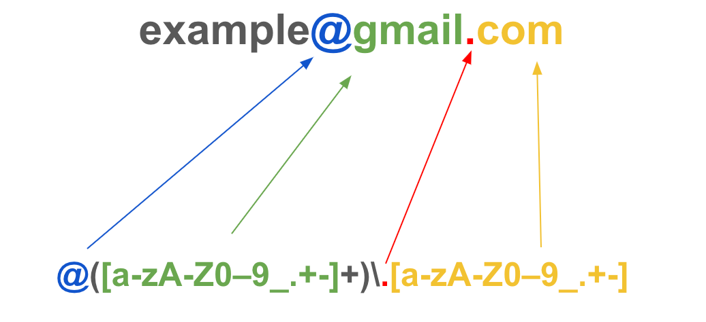

Uses of Regular Expressions
- Pattern matching – Finding specific words, numbers, or character sequences in text.
- Data validation – Checking if input matches a required format (e.g., emails, phone numbers, passwords).
- Search and replace – Replacing specific patterns in text (e.g., changing dates, cleaning data).
- Text parsing – Extracting specific pieces of information from large text files or logs.
- Syntax highlighting – Identifying keywords, numbers, or symbols in code editors.
- Data scraping – Extracting structured data from HTML, XML, or other text formats.
- Input sanitization – Removing unwanted characters or patterns from user input to prevent errors or security issues.
- Log analysis – Searching for error codes, IP addresses, or specific events in log files.
- Automated testing – Verifying output formats in test scripts and reports.
- String splitting – Dividing text into components based on complex delimiters.